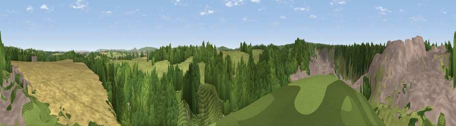

Viewpoint near Mells
#22511 in England · top 41% of its area beats it · near Mells · path 212 mWhere it is
The exact computed spot (ST 73225 48025). Click the marker for map links.
Public access: the nearest public right of way is about 212 m away — the final stretch may cross private land. Computed from Natural England's CRoW access layer and OpenStreetMap rights of way — not the legal definitive map. Always verify locally.
The view, rendered

A 360° render of this exact spot computed from the terrain model, tree cover and land cover — summer colours, afternoon light, calibrated against photographs of famous viewpoints. Real trees, hedges and buildings will differ in detail.
The panorama
Grey silhouette: terrain skyline in each direction (720 bearings, Earth curvature and refraction included). Dashed green: skyline with trees (+15 m) and buildings (+8 m) as obstacles. Blue strip: how far the ground is visible on each bearing.
Where the view opens
Wedge length = distance to the farthest visible ground on that bearing (vegetation-aware). Rings at 10, 25 and 50 km.
What fills the view
43% woodland · 22% grassland · 21% built-up · 14% cropland
Angular shares of the visible panorama (visual magnitude), not map area. Landscape diversity 0.58 (0–1 Shannon).
Key numbers
More beautiful places nearby
The staircase of upgrades: each row has a higher view potential than everything closer. Driving times are estimates from straight-line distance, calibrated against real road routing — check an actual route before setting out.
| Place | Direction | Drive | Score |
|---|---|---|---|
| Viewpoint near Downhead | SW · 5 km | ~11 min | 50.6 |
| Postlebury Hill | S · 5 km | ~11 min | 62.7 |
| Viewpoint near East Cranmore | SW · 6 km | ~12 min | 69.2 |
| Viewpoint near Oakhill | WSW · 9 km | ~18 min | 71.3 |
| Cley Hill | ESE · 11 km | ~21 min | 76.8 |
| Viewpoint near Lamyatt | SSW · 14 km | ~25 min | 77.8 |
| Beacon Batch | WNW · 26 km | ~42 min | 79.4 |
| Bleadon Hill [Loxton Hill] | WNW · 38 km | ~57 min | 79.6 |
51.23078, -2.38485 · source: screening · position refined by local search. Computed location — check access rights before visiting.